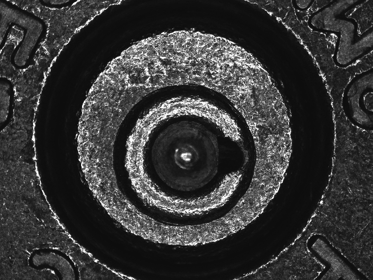
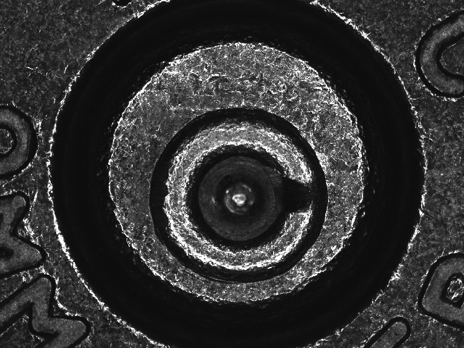
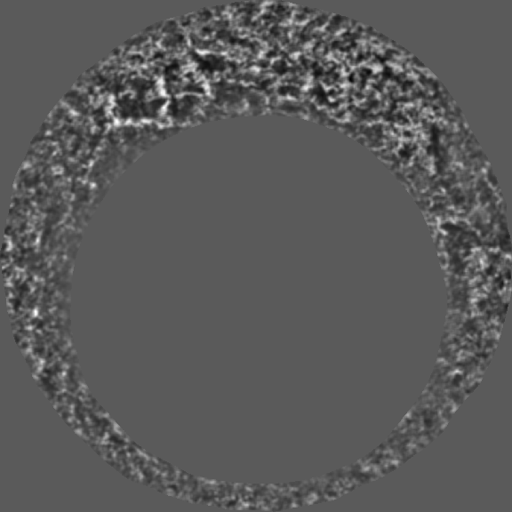
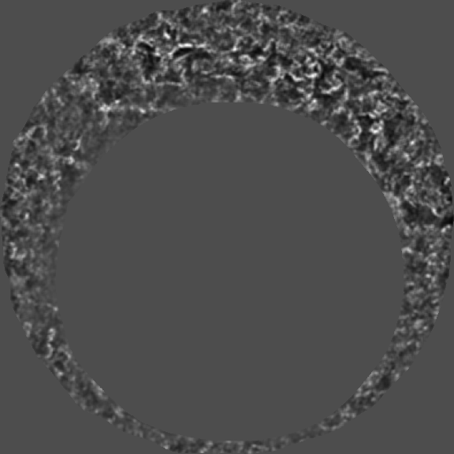

Chapter 4 Firearms: casings
Xiao Hui Tai
4.1 Introduction
Marks are left on cartridge cases due to the firing process of a gun, in a similar way that marks are left on bullets. In the case of cartridge cases, there are at least two types of marks that are of interest. First, the firing pin hits the primer at the base of the cartridge, leaving a firing pin impression. The subsequent explosion (which launches the bullet) also causes the cartridge case to be pressed against the breech block of the gun, leaving impressed marks known as breechface marks. Both these types of marks are thought to individualize a gun, hence law enforcement officers frequently collect cartridge cases from crime scenes, in hopes of connecting these to retrieved guns, or connecting crimes where the same weapon was used.
In current practice, retrieved cartridge cases are entered into a national database called the National Integrated Ballistics Information Network (NIBIN), through a computer-based platform which was developed and is maintained by Ultra Electronics Forensic Technology Inc. (FTI). This platform captures an image of the “new” cartridge case and runs a proprietary search algorithm, returning a list of top ranked potential matches from the database. Firearms examiners then examine this list and the associated images, to make a judgment about which potential matches warrant further investigation. The physical cartridge cases associated with these images are then located and examined under a comparison microscope. The firearms examiner decides if there are any matches, based on whether there is “sufficient agreement” between the marks (AFTE Criteria for Identification Committee 1992a), and may bring this evidence to court.
There has been much public criticism in recent years about the current system. For example, PCAST (PCAST 2016) expressed concern that there had been insufficient studies establishing the reliability of conclusions made by examiners, and the associated error rates had not been adequately estimated. They suggested two directions for the path forward. The first is to “continue to improve firearms analysis as a subjective method,” and the second is to “convert firearms analysis from a subjective method to an objective method,” through the use of automated methods and image-analysis algorithms (PCAST 2016).
There have been efforts by various groups, both commercial and academic, in line with this second recommendation. A full review is out of the scope of the current text, but we refer the interested reader to Roth et al. (2015), Geradts et al. (2001), Thumwarin (2008), Riva and Champod (2014), Vorburger et al. (2007), Song (2013), and others. One point to note is that as far as we know, none of these methods are open-source. We have developed methodology to process and compare cartridge cases in a fully automatic, open-source manner, and in this chapter, we describe R packages to accomplish these tasks.
4.2 Data
NIST maintains a Ballistics Toolmark Research Database (https://tsapps.nist.gov/NRBTD), an open-access research database of bullet and cartridge case toolmark data. The database contains images from test fires originating from studies conducted by various groups in the firearm and toolmark community. These cartridge cases were originally collected for different purposes, for example the Laura Lightstone study investigated whether firearms examiners were able to differentiate cartridge cases from consecutively manufactured pistol slides (Lightstone 2010). The majority of available data are cartridge cases that were sent to NIST for imaging, but the website also allows users to upload their own data in a standardized format.
There are a total of 2,305 images (as of 3/4/2019), and among these are data sets involving consecutively manufactured pistol slides, a large number of firings (termed persistence studies because they investigate the persistence of marks), as well as different makes and models of guns and ammunition. Gun manufacturers in the database include Glock, Hi-Point, Ruger, Sig Sauer, and Smith & Wesson, and ammunition brands include CCI, Federal, PMC, Remington, Speer, Wolf and Winchester.
Measurements are primarily made using a Leica FS M 2D reflectance microscope, and a Nanofocus uSurf disc scanning confocal microscope. The former captures photo images while the latter captures 3D topographies. Detailed metadata are available for each of these images, for example for photo images, the magnification was 2X with a lateral resolution of \(2.53 \mu m\), producing \(2592 \times 1944\) pixel, 256-grayscale PNG images. For 3D, various magnifications were used, for example an objective of 10X results in a lateral resolution of \(3.125 \mu m\), and images that are around \(1200 \times 1200\). The 3D data are in x3p format, and more information about this file format can be found in Chapter 3.
Examples of images are in Section 4.5.
4.3 R Package(s)
The goal of the analysis is to derive a measure of similarity between a pair of cartridge case images. There are a few steps involved in such an analysis. Broadly, we first need to process the images so that they are ready for analysis. This might involve selecting relevant marks or highlighting specific features. Next, given two images, they need to be aligned so that any similarity measure extracted is meaningful. The final step is to estimate the similarity score.
We have developed R packages to analyze images in the standard format in NIST’s database. cartridges analyzes 2D photo images, while cartridges3D analyzes 3D topographies. A complete description of methodology used in cartridges is in Tai and Eddy (2018). cartridges3D modifies this for 3D topographies, with the major difference being in pre-processing. More details can be found in the package README.
The primary functions of the package are allPreprocess and calculateCCFmaxSearch. The former performs all pre-processing steps, while the latter does both alignment and computation of a similarity score. The corresponding function for processing 3D data is allPreprocess3D. The end result is a similarity score for a pair of images being compared.
4.4 Drawing Conclusions
Depending on the goal of the analysis, as well as the availability of data, there are a few ways in which conclusions may be drawn. The analysis produces a similarity score for a pair of images. This could be sufficient for the analysis, for example if we have two pairs of images being compared, the goal might be simply to estimate which of the two pairs are more similar to each other. This situation is straightforward, and we can make a conclusion such as “Comparison 1 contains images that are more similar than Comparison 2.” If a set of comparisons are being done, the conclusion might be of the form “these are the top 10 pairs with highest similarity scores out of the 100 comparisons being made.” This could be used to generate investigative leads, where we select the top 10 (say) pairs for further investigation. A different context in which this type of conclusion could be used is by examiners for blind verification. This means that an examiner first comes to their own conclusion, and then verifies this using an automatic method, making a conclusion such as “Based on my experience and training, these two cartridge cases come from the same gun. This pair that I identified also had a score of .7, the highest similarity score returned by [[insert algorithm]] among [[insert subset of pairs being considered]].”
In other situations, we might be interested in designating a similarity cutoff above which some action is taken. The selection of such a cutoff depends on the goal. For example, similar to the above situation, we might be interested in selecting pairs above a cutoff for further manual investigation, instead of simply picking the top 10 pairs. Alternatively, a cutoff could be used to decide if pairs are matches or non-matches. This could be of interest in criminal cases, where a conclusion of match or non-match is required to decide if a person should be implicated in a crime. In the first case a lower cutoff might be set to ensure high recall, while in the second case a much higher cutoff might be necessary.
Given appropriate data on the distribution of similarity scores for non-matching pairs in some population of interest, a third type of conclusion that we can draw is to estimate a probability of getting a higher similarity score by chance. For example, if we obtain a similarity of .7 for the pair of interest, we compare .7 to some distribution of similarity scores for non-matching pairs, that might have been obtained from prior studies. The probability of interest is the probability that a random draw from that distribution is larger than .7, say \(p_0\). The conclusion that we can then draw is that if the pair was a non-match, the probability of getting a score higher than .7 is \(p_0\). If the value of \(p_0\) is small, this provides evidence against the hypothesis that the pair of interest is a non-matching pair. Such a probability can be used as a measure of the probative value of the evidence.
4.5 Case Study
The following case study uses two 2D photo images from the NBIDE study in NIST’s database, coming from the same Ruger gun, firing PMC ammunition. Referring to the study metadata, these are cartridge cases RR054 and RR072, corresponding to the files “NBIDE R BF 054.png” and “NBIDE R BF 072.png”.
We first load the package:
library(cartridges)We can read in and plot the images as follows. If using a user-downloaded image, one can simply replace the file path with the location of the downloaded image.
exImage1 <- readCartridgeImage("./img/casings_NBIDE054.png")
plotImage(exImage1, type = "original")
exImage2 <- readCartridgeImage("./img/casings_NBIDE072.png")
plotImage(exImage2, type = "original")
Now, all the pre-processing can be done using allPreprocess.
processedEx1 <- allPreprocess("./img/casings_NBIDE054.png")
processedEx2 <- allPreprocess("./img/casings_NBIDE072.png")The processed images can be plotted using plotImage.
plotImage(processedEx1, type = "any")
plotImage(processedEx2, type = "any")
Now, to compare these two images, we use
calculateCCFmaxSearch(processedEx1, processedEx2)This produces a score of .40. As discussed in Section 4.4, the conclusions to be drawn depend on the goals of the analysis, as well as the availability of data. The first type of conclusion could be that this pair of images is more similar to each other than some other pair of images. The second type of conclusion could be that this score is high enough to warrant further manual investigation. Finally, if we have some prior information on some reference distribution of non-matching scores, we can compute the probability of obtaining a higher score by chance as follows. Given a reference population of interest, one can perform the appropriate pairwise comparisons and obtain non-match distributions empirically. Here we use a normal distribution for purposes of illustration.
set.seed(0)
computeProb(0.4, rnorm(50, 0.02, 0.3))## [1] 0.08The conclusion then is that the probability of obtaining a score higher than .40, for a non-matching pair, is .08.
The same type of analysis can be done with 3D topographies using the corresponding functions in cartridges3D.

References
AFTE Criteria for Identification Committee. 1992a. “Theory of Identification, Range of Striae Comparison Reports, and Modified Glossary Definitions – an AFTE Criteria for Identification Committee Report.” AFTE Journal 24 (2): 336–40.
President’s Council of Advisors on Science and Technology. 2016. Report to the President on Forensic Science in Criminal Courts: Ensuring Scientific Validity of Feature-Comparison Methods. Washington, D.C.: Executive Office of the President.
Roth, J., A. Carriveau, X. Liu, and A. K. Jain. 2015. “Learning-Based Ballistic Breech Face Impression Image Matching.” In 2015 Ieee 7th International Conference on Biometrics Theory, Applications and Systems (Btas), 1–8. Arlington, VA. https://doi.org/10.1109/BTAS.2015.7358774.
Geradts, Zeno J, Jurrien Bijhold, Rob Hermsen, and Fionn Murtagh. 2001. “Image Matching Algorithms for Breech Face Marks and Firing Pins in a Database of Spent Cartridge Cases of Firearms.” Forensic Science International 119 (1): 97–106.
Thumwarin, P. 2008. “An Automatic System for Firearm Identification.” In 2008 International Symposium on Communications and Information Technologies, 100–103. https://doi.org/10.1109/ISCIT.2008.4700162.
Riva, Fabiano, and Christophe Champod. 2014. “Automatic Comparison and Evaluation of Impressions Left by a Firearm on Fired Cartridge Cases.” Journal of Forensic Sciences 59 (3): 637–47. https://doi.org/10.1111/1556-4029.12382.
Vorburger, T., J. Yen, B. Bachrach, T. Renegar, J. Filliben, L. Ma, H. Rhee, et al. 2007. “Surface Topography Analysis for a Feasibility Assessment of a National Ballistics Imaging Database.” NISTIR 7362. Gaithersburg, MD: National Institute of Standards; Technology.
Song, John. 2013. “Proposed ‘NIST Ballistics Identification System (NBIS)’ Based on 3D Topography Measurements on Correlation Cells.” AFTE Journal 45 (2): 184–94.
Lightstone, Laura. 2010. “The Potential for and Persistence of Subclass Characteristics on the Breech Faces of SW40VE Smith & Wesson Sigma Pistols.” AFTE Journal 42 (4): 308–22.
Tai, Xiao Hui, and William F. Eddy. 2018. “A Fully Automatic Method for Comparing Cartridge Case Images,” Journal of Forensic Sciences 63 (2): 440–48. https://doi.org/10.1111/1556-4029.13577.